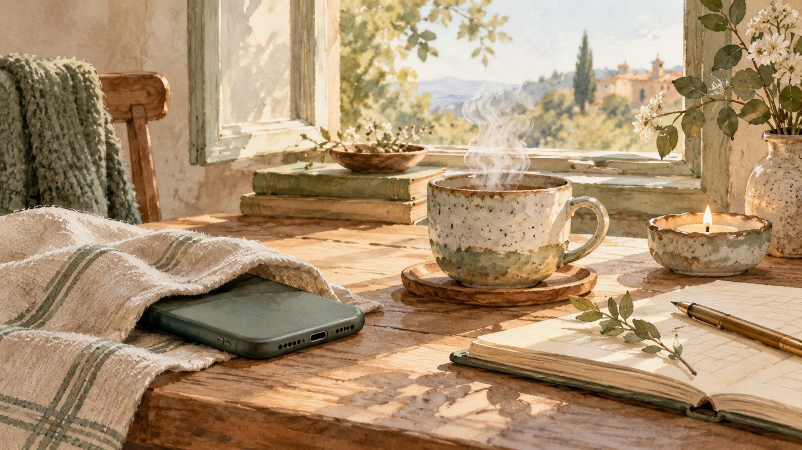
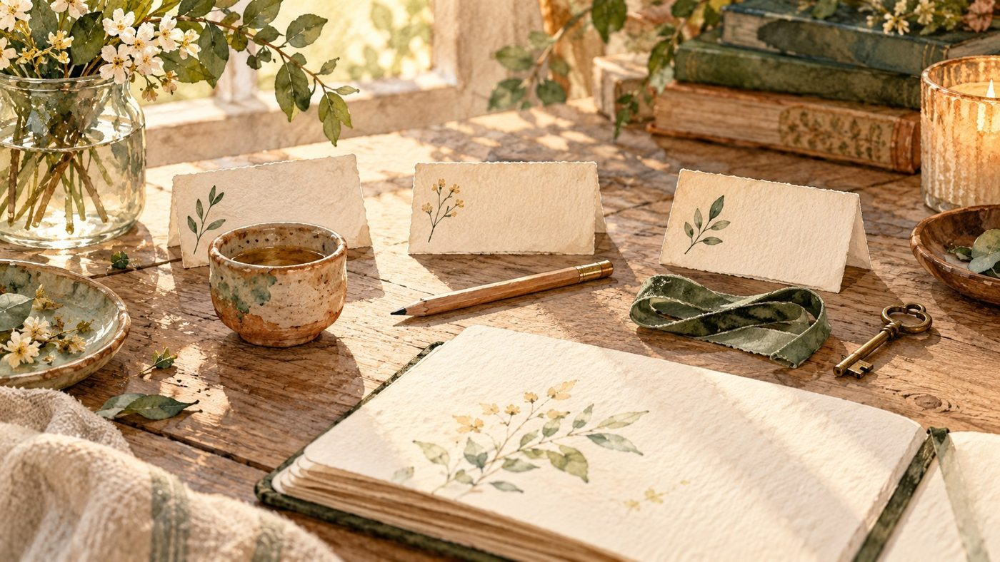

Тихая
неделя
7 коротких практик без экрана, чтобы услышать себя и вернуть немного живого внимания
Мастерская-Колыбель
Бесплатно. Выберите то, где вам удобнее.
Неделя, в которой чуть тише
Лента, сообщения, срочные дела, чужие голоса: внимание весь день занято не вами. «Тихая неделя» возвращает его назад. Семь маленьких практик: листок бумаги, час без уведомлений, руки в материале, прогулка без наушников. Без марафонов и без идеальной версии вас в конце.

Что вас ждёт внутри
Безопасное место для себя. Это не курс и не экзамен. Сюда можно прийти уставшей, ничего не уметь и никому ничего не доказывать. Никто не проверит, как вы справились, и «правильно» здесь нет. Есть неделя, в которой вы на своей стороне.
Как устроен каждый день. Короткая практика на 10-20 минут: что взять, что сделать, на что обратить внимание. Потом «Моя маленькая история»: я рассказываю, как это бывает у меня, чтобы вам не казалось, что вы делаете что-то не так. И «Строка для себя»: одна фраза, которую можно дописать на полях, чтобы заметить, что с вами происходит. Не для отчёта и не для красивого поста.
Как организовать тихую неделю. Внутри подсказки, в какое время удобнее (утром, в обед или перед сном), как сделать самую короткую версию, если сил мало, и как задержаться, если хочется. Что понадобится: листок, карандаш, вода, чашка, ткань, крупа или глина. И телефон, который можно положить экраном вниз.
Куда вы придёте. За неделю вы разберёте голову на бумаге, проведёте час без уведомлений, вернёте внимание рукам, выйдете на прогулку без наушников, послушаете, кто сегодня в вас говорит, уберёте одно лишнее и соберёте свой маленький мир на подоконнике. Каждый шаг маленький, а вместе они дают то, чего обычно не хватает: тихо и своё время.

Как получить
Я и сама не всегда умею отдыхать, поэтому эту неделю собирала в том числе для себя. Гайд не заменяет врача или психолога: если плохое состояние держится больше двух-трёх недель, пожалуйста, обратитесь за профессиональной помощью.
Ксения, Мастерская-Колыбель · на главную